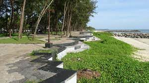
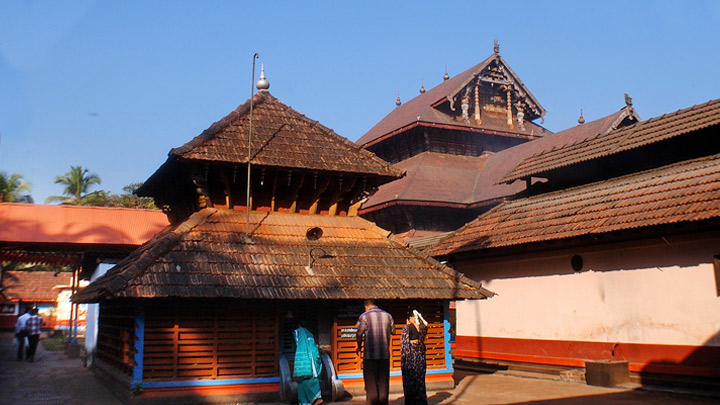

Beypore Beach
Beypore or Beypur is an ancient port town and a locality town in Kozhikode district in the state of Kerala, India

Kappad Beach
Kappad, or Kappakadavu locally, is a beach and village near Koyilandy, in the district Kozhikode, Kerala.

Tali Temple
Tali Shiva Temple or Tali Mahakshetram is a Hindu temple dedicated to the deity Shiva, situated in the heart of the Kozhikode city, Kerala.